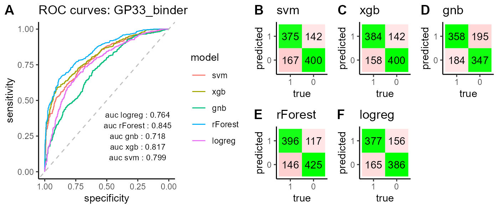
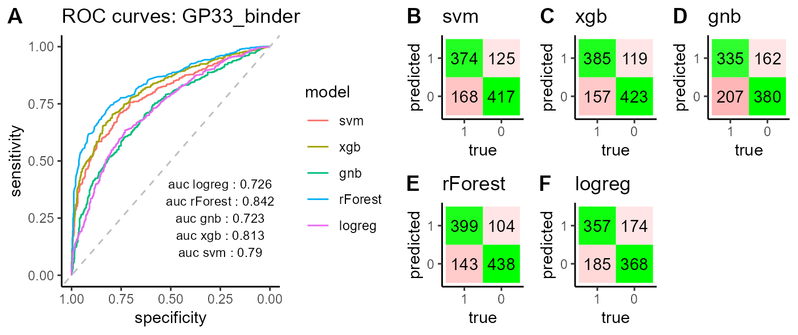
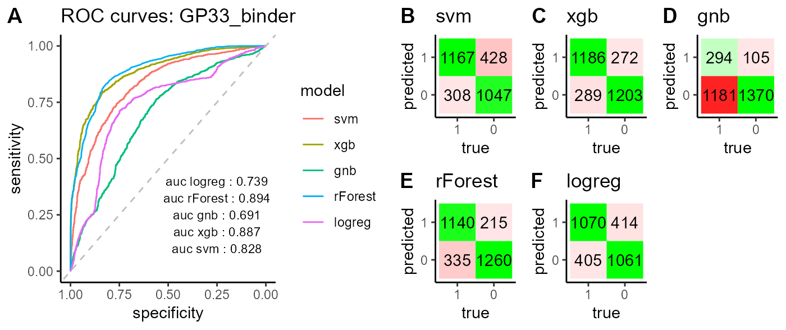

vignettes/PlatypusML_classic.Rmd
PlatypusML_classic.RmdThe PlatypusML package is meant to provide examples and potential pipelines for classifying or regressing on immunological data. All functions are designed based on the VDJ_GEX_matrix (VGM), object central to the Platypus family of packages. Currently PlatypusML allows the extraction of features and labels from the VGM object with the possibility for selecting a desired encoding where multiple options are available (in the case of sequences for example). The feature matrix can be then used to classify the samples based on the labels or to predict relevant quantities such as affinity through regression. For the chosen machine learning approach, VDJ or GEX features can be used. We are currently working on models that can integrate both VDJ and GEX for predictions.
This vignette showcases a potential pipeline using PlatypusML, focusing on a particular example.
For the purpose of this vignette we are going to create two different labeled VGM objects:
VGM consisting of GP33- & NP396-specific CD8+ T cells & GP66-specific CD4+ T cells. We are going to add binder labels, to be able to predict binding(1)/non-binding(0) in binary classification tasks.
VGM_CD8 consisting only of GP33- & NP396-specific CD8+ T cells. We are going to add binder labels, to be able to predict binding(1)/non-binding(0) in binary classification tasks. Additionally, we are going to add phenotype labels to GP33-specific CD8+ T cells (), to be able to predict different phenotypes in binary classification tasks, such as LCMV(1)/MCMV(0) infection, acute(1)/chronic(0) LCMV infection and biological replicate sample identity.
Alternatively, labelled VGMs as well as featuresets and classifiers generated in this vignette can be downloaded directly from here:
We download the raw VDJ and GEX Cellranger outputs of the datasets kuhn2021a (containing GP33-specific CD8+ cells) & shlesinger2022c (containing NP396-specific CD8+ cells) & khatun2021a (containing GP66-specific CD4+ cells) from Platypus DB.
#kuhn2021a:GP33-specific CD8+ cells
kuhn2021a <- PlatypusDB_fetch(
PlatypusDB.links = c("kuhn2021a/GP33.AcuteLCMV.28dpi.CD4Tcell.S1/ALL",
"kuhn2021a/GP33.AcuteLCMV.28dpi.CD4Tcell.S2/ALL",
"kuhn2021a/GP33.ChronicLCMV.28dpi.CD4Tcell.S3/ALL",
"kuhn2021a/GP33.ChronicLCMV.28dpi.CD4Tcell.S4/ALL",
"kuhn2021a/GP33.MCMVie2gp33.28dpi.CD4Tcell.S5/ALL",
"kuhn2021a/GP33.MCMVie2gp33.28dpi.CD4Tcell.S6/ALL"),
save.to.disk = F,
load.to.enviroment = F,
load.to.list = T
)
#shlesinger2022c:NP396-specific CD8+ cells
shlesinger2022c <- PlatypusDB_fetch(
PlatypusDB.links = c("shlesinger2022c/Dejavu.CC10.NP396.S1/ALL",
"shlesinger2022c/Dejavu.CC10.NP396.S2/ALL",
"shlesinger2022c/Dejavu.CC25.NP396.S3/ALL",
"shlesinger2022c/Dejavu.CC25.NP396.S4/ALL"),
save.to.disk = F,
load.to.enviroment = F,
load.to.list = T
)
#khatun2021a: GP66-specific CD4+ cells
khatun2021a <- PlatypusDB_fetch(
PlatypusDB.links = c("khatun2021a/CD4.Tcell.Khatun.M3.S5/ALL",
"khatun2021a/CD4.Tcell.Khatun.M4.S6/ALL",
"khatun2021a/CD4.Tcell.Khatun.M5.S7/ALL"),
save.to.disk = F,
load.to.enviroment = F,
load.to.list = T
)We integrate the three datasets by generating a combined VDJ_GEX_matrix (VGM). The group_id will help us to distinguish samples from different datasets later on. Additionally, we extract the full length VDJ sequences using MIXCR through the function VDJ_call_MIXCR_full. For more details on how this is done please refer to the ‘Quick Start’ vignette, section 7.3.Extracting full-length sequences from the VDJRegion. This is an optional step that allows the use of the full length sequences as features later during modeling. However, classification can be performed on the already existing sequences of the integrated VGM object.
#integrating the three datasets into one VGM object
VGM <- VDJ_GEX_matrix(Data.in = list(shlesinger2022c, kuhn2021a, khatun2021a),
parallel.processing = "parlapply",
trim.and.align = TRUE,
integration.method = "harmony",
group.id = c(1,1,1,1,2,2,2,2,2,2,3,3,3))
## add MIXCR columns to VGM[[1]]
VDJ_MIXCR <- VDJ_call_MIXCR_full(VDJ = VGM[[1]],
species="mmu",
platypus.version="v3",
operating.system="Darwin",
simplify=FALSE)
VGM[[1]]<- VDJ_MIXCRWe add the following binary labels to both the VDJ (VGM[[1]]) and the GEX (VGM[[2]]@meta.data) object:
1 indicates binder, 0 indicates non-binder. We use the group_id to distinguish cells from different datasets.
#adding binder information to VDJ object
VGM[[1]]$GP33_binder <- 0
VGM[[1]]$NP396_binder <- 0
VGM[[1]]$GP66_binder <- 0
VGM[[1]]$NP396_binder[which(VGM[[1]]$group_id==1)] <- 1
VGM[[1]]$GP33_binder[which(VGM[[1]]$group_id==2)] <- 1
VGM[[1]]$GP66_binder[which(VGM[[1]]$group_id==3)] <- 1
#adding binder information to GEX object
VGM[[2]]@meta.data$GP33_binder <- 0
VGM[[2]]@meta.data$NP396_binder <- 0
VGM[[2]]@meta.data$GP66_binder <- 0
VGM[[2]]@meta.data$NP396_binder[which(VGM[[2]]@meta.data$group_id==1)] <- 1
VGM[[2]]@meta.data$GP33_binder[which(VGM[[2]]@meta.data$group_id==2)] <- 1
VGM[[2]]@meta.data$GP66_binder[which(VGM[[2]]@meta.data$group_id==3)] <- 1
saveRDS(VGM, file = paste0(filepath,"PlatypusML_classic_VGM_NP396_GP33_GP66_labelled_MIXCR.RDS"))NOTE: Here we save the resulting VGM object containing the integrated data including the full length VDJ region sequences as an RDS file as its computation is both computationally expensive and time-consuming. This is recommended to make potential future uses of the object more efficient.
VGM <- readRDS(paste0(filepath,"PlatypusML_classic_VGM_NP396_GP33_GP66_labelled_MIXCR.RDS"))
#testing labels: number of samples per binder
VDJ_GP33 <- sum(VGM[[1]]$GP33_binder)
VDJ_GP66 <- sum(VGM[[1]]$GP66_binder)
VDJ_NP396 <- sum(VGM[[1]]$NP396_binder)
GEX_GP33 <- sum(VGM[[2]]$GP33_binder)
GEX_NP396 <- sum(VGM[[2]]$NP396_binder)
GEX_GP66 <- sum(VGM[[2]]$GP66_binder)
cat(sprintf("VDJ: %s GP33-binding & %s NP396-binding & %s GP66-binding cells", VDJ_GP33, VDJ_NP396, VDJ_GP66),' \n', sprintf("GEX: %s GP33-binding & %s NP396-binding & %s GP66-binding cells", GEX_GP33, GEX_NP396, GEX_GP66), ' \n')VDJ: 10662 GP33-binding & 17016 NP396-binding & 11352
GP66-binding cells
GEX: 22131 GP33-binding & 29572 NP396-binding & 13947
GP66-binding cells
We integrate the two datasets loaded above (shlesinger2022c, kuhn2021a), by generating a combined VDJ_GEX_matrix (VGM). The group_id will help us to distinguish samples from different datasets later on. Additionally, we extract the full length VDJ sequences using MIXCR through the function VDJ_call_MIXCR_full. For more details on how this is done please refer to the ‘Quick Start’ vignette, section 7.3.Extracting full-length sequences from the VDJRegion. This is an optional step that allows the use of the full length sequences as features later during modeling. However, classification can be performed on the already existing sequences of the integrated VGM object.
#integrating the two datasets into one VGM object
VGM_CD8 <- VDJ_GEX_matrix(Data.in = list(shlesinger2022c, kuhn2021a),
parallel.processing("mclapply"),
trim.and.align = TRUE,
integration.method = "harmony",
group.id = c(1,1,1,1,2,2,2,2,2,2))
# add MIXCR columns to VGM[[1]]
VDJ_MIXCR <- VDJ_call_MIXCR_full(VDJ = VGM_CD8[[1]],
species="mmu",
platypus.version="v3",
operating.system="Darwin",
simplify=FALSE)
VGM_CD8[[1]]<- VDJ_MIXCRWe add the following binary binder labels to both the VDJ (VGM[[1]]) and the GEX (VGM[[2]]@meta.data) object:
1 indicates binder, 0 indicates non-binder. We use the group_id to distinguish cells from different datasets.
#adding binder information to VDJ object
VGM_CD8[[1]]$GP33_binder <- 0
VGM_CD8[[1]]$NP396_binder <- 0
VGM_CD8[[1]]$NP396_binder[which(VGM_CD8[[1]]$group_id==1)] <- 1
VGM_CD8[[1]]$GP33_binder[which(VGM_CD8[[1]]$group_id==2)] <- 1
#adding binder information to GEX object
VGM_CD8[[2]]@meta.data$GP33_binder <- 0
VGM_CD8[[2]]@meta.data$NP396_binder <- 0
VGM_CD8[[2]]@meta.data$NP396_binder[which(VGM_CD8[[2]]@meta.data$group_id==1)] <- 1
VGM_CD8[[2]]@meta.data$GP33_binder[which(VGM_CD8[[2]]@meta.data$group_id==2)] <- 1For the GP33-specific cells from the kuhn2021a dataset we add phenotype lables to the GEX (VGM[[2]]@meta.data) object. We use the sample_id to distinguish cells from different samples. The samples in the kuhn2021a dataset are the following: s5 & s6 are acute LCMV-infected cells, s7 & s8 are chronic LCMV-infected cells, s9 & s10 are (latent) MCMV-infected cells.
We add the following binary phenotype labels:
The cells for which none of the binary labels applies are labelled with NA.
#adding phenotype labels to GEX object
VGM_CD8[[2]]$acute_chronic_LCMV <- 0
VGM_CD8[[2]]$acute_chronic_LCMV[which(VGM_CD8[[2]]$sample_id=="s5" | VGM_CD8[[2]]$sample_id=="s6")] <- 1
VGM_CD8[[2]]$acute_chronic_LCMV[which(VGM_CD8[[2]]$sample_id=="s9" | VGM_CD8[[2]]$sample_id=="s10")] <- NA
VGM_CD8[[2]]$acute_chronic_LCMV[which(VGM_CD8[[2]]$group_id==1)] <- NA
VGM_CD8[[2]]$LCMV_MCMV <- 0
VGM_CD8[[2]]$LCMV_MCMV[which(VGM_CD8[[2]]$acute_chronic_LCMV==1 | VGM_CD8[[2]]$acute_chronic_LCMV==0)] <- 1
VGM_CD8[[2]]$LCMV_MCMV[which(VGM_CD8[[2]]$group_id==1)] <- NA
VGM_CD8[[2]]$bio_replicate <- NA
VGM_CD8[[2]]$bio_replicate[which(VGM_CD8[[2]]$sample_id=="s5")] <- 1
VGM_CD8[[2]]$bio_replicate[which(VGM_CD8[[2]]$sample_id=="s6")] <- 0
#save VGM
saveRDS(VGM_CD8,file=paste0(filepath,"PlatypusML_classic_VGM_NP396_GP33_labelled_MIXCR.rds"))NOTE: Here we save the resulting VGM object containing the integrated data including the full length VDJ region sequences as an RDS file as its computation is both computationally expensive and time-consuming. This is recommended to make potential future uses of the object more efficient.
VGM_CD8 <- readRDS(file = paste0(filepath,"PlatypusML_classic_VGM_NP396_GP33_labelled_MIXCR.RDS"))
#testing labels: number of binder-specific cells
VDJ_GP33 <- sum(VGM_CD8[[1]]$GP33_binder)
VDJ_NP396 <- sum(VGM_CD8[[1]]$NP396_binder)
GEX_GP33 <- sum(VGM_CD8[[2]]$GP33_binder)
GEX_NP396 <- sum(VGM_CD8[[2]]$NP396_binder)
cat(sprintf("VDJ: %s GP33-binding & %s NP396-binding cells", VDJ_GP33, VDJ_NP396), ' \n',sprintf("GEX: %s GP33-binding & %s NP396-binding cells", GEX_GP33, GEX_NP396), ' \n')VDJ: 11263 GP33-binding & 18095 NP396-binding cells
GEX: 22656 GP33-binding & 30263 NP396-binding cells
#testing labels: number of phenotype-specific cells
acuteLCMV <- sum(VGM_CD8[[2]]$acute_chronic_LCMV==1, na.rm=T)
chronicLCMV <- sum(VGM_CD8[[2]]$acute_chronic_LCMV==0, na.rm=T)
LCMV <- sum(VGM_CD8[[2]]$LCMV_MCMV==1, na.rm=T)
MCMV <- sum(VGM_CD8[[2]]$LCMV_MCMV==0, na.rm=T)
s5 <- sum(VGM_CD8[[2]]$bio_replicate==1, na.rm=T)
s6 <- sum(VGM_CD8[[2]]$bio_replicate==0, na.rm=T)
cat(sprintf("GEX: %s acute & %s chronic LCMV-infected cells", acuteLCMV, chronicLCMV), ' \n',sprintf("GEX: %s LCMV & %s MCMV-infected cells", LCMV, MCMV),' \n',sprintf("GEX: Biological replicates: %s cells in sample s5 & %s cells in sample s6", s5, s6), ' \n')GEX: 9235 acute & 4215 chronic LCMV-infected cells
GEX: 13450 LCMV & 9206 MCMV-infected cells
GEX: Biological replicates: 4125 cells in sample s5 & 5110 cells in
sample s6
We are going to predict binding (binary classification) using VDJ information only. We are first extracting features and then training different classification models.
For feature extraction we use the PlatypusML_feature_extraction() function. There are multiple options for choosing:
We are going to create 3 different feature matrices to be used for classifications further downstream. In this case, we use the VDJ and VJ full length sequences encoded using kmer of size 3 (default). There is an additional option to set the size of the kmer, by setting a value “to parameter.encoding.nt”. For more details and encoding options, please refer to the documentation of the function.
The PlatypusML_classification() function takes as input the encoded features obtained from the PlatypusML_extract_features() function. The classification function runs cross validation on a specified number of folds for different classification models (XGBoost, SVM, Random Forest, Logistic Regression & Gaussian Naive Bayes) and reports the AUC scores, ROC curve and confusion matrix for each classification model.
#feature extraction
features_mixcr_kmer_clone_GP33 <- PlatypusML_feature_extraction(
VDJ = VGM[[1]],
which.features = c("VDJ_nt_mixcr", "VJ_nt_mixcr"),
which.encoding = c("kmer", "kmer"),
encoding.level = "clone",
which.label = "GP33_binder")
saveRDS(features_mixcr_kmer_clone_GP33, file=paste0(filepath,"features/mixcr_kmer_clone_GP33.RDS"))
features_mixcr_kmer_clone_GP33 <- readRDS(paste0(filepath,"features/mixcr_kmer_clone_GP33.RDS"))
#classification
classifier_GP33_mixcr_kmer_clone <- PlatypusML_classification(features_mixcr_kmer_clone_GP33, 5)
saveRDS(classifier_GP33_mixcr_kmer_clone, file = paste0(filepath,"classifiers/GP33_mixcr_kmer_clone.RDS"))
classifier_GP33_mixcr_kmer_clone <- readRDS(paste0(filepath,"classifiers/GP33_mixcr_kmer_clone.RDS"))
classifier_GP33_mixcr_kmer_clone$combined
#feature extraction
features_cdr3s_kmer_clone <- PlatypusML_feature_extraction(
VDJ = VGM[[1]],
which.features = c("VDJ_cdr3s_nt", "VJ_cdr3s_nt"),
which.encoding = c("kmer", "kmer"),
encoding.level = "clone",
which.label = "GP33_binder")
saveRDS(features_cdr3s_kmer_clone, file=paste0(filepath,"features/cdr3s_kmer_clone_GP33.RDS"))
features_cdr3s_kmer_clone <- readRDS(paste0(filepath,"features/cdr3s_kmer_clone_GP33.RDS"))
#classification
classifier_GP33_cdr3s_kmer_clone <- PlatypusML_classification(features_cdr3s_kmer_clone, 5)
saveRDS(classifier_GP33_cdr3s_kmer_clone, file = paste0(filepath,"classifiers/GP33_cdr3s_kmer_clone.RDS"))
classifier_GP33_cdr3s_kmer_clone <- readRDS(paste0(filepath,"classifiers/GP33_cdr3s_kmer_clone.RDS"))
classifier_GP33_cdr3s_kmer_clone$combined
#feature extraction
features_cdr3s_234kmer_clone <- PlatypusML_feature_extraction(
VDJ = VGM[[1]],
which.features = c("VDJ_cdr3s_nt", "VJ_cdr3s_nt"),
which.encoding = c("kmer", "kmer"),
parameters.encoding.nt = 234,
encoding.level = "clone",
which.label = "GP33_binder")
saveRDS(features_cdr3s_234kmer_clone, file=paste0(filepath,"features/cdr3s_234kmer_clone_GP33.RDS"))
features_cdr3s_234kmer_clone <- readRDS(paste0(filepath,"features/cdr3s_234kmer_clone_GP33.RDS"))
#classification
classifier_GP33_cdr3s_234kmer_clone <- PlatypusML_classification(features_cdr3s_234kmer_clone, 5)
saveRDS(classifier_GP33_cdr3s_234kmer_clone, file = paste0(filepath,"classifiers/GP33_cdr3s_234kmer_clone.RDS"))
#feature extraction
features_cdr3s_onehot_clone <- PlatypusML_feature_extraction(
VDJ = VGM[[1]],
which.features = c("VDJ_cdr3s_nt", "VJ_cdr3s_nt"),
which.encoding = c("onehot", "onehot"),
encoding.level = "clone",
which.label = "GP33_binder")
saveRDS(features_cdr3s_onehot_clone, file=paste0(filepath,"features/cdr3s_onehot_clone_GP33.RDS"))
features_cdr3s_onehot_clone_GP33 <- readRDS(paste0(filepath,"features/cdr3s_onehot_clone_GP33.RDS"))
#classification
classifier_GP33_cdr3s_onehot_clone <- PlatypusML_classification(features_cdr3s_onehot_clone, 5)
saveRDS(classifier_GP33_cdr3s_onehot_clone, file = paste0(filepath,"classifiers/GP33_cdr3s_onehot_clone.RDS"))
classifier_GP33_cdr3s_onehot_clone <- readRDS(paste0(filepath,"classifiers/GP33_cdr3s_onehot_clone.RDS"))
classifier_GP33_cdr3s_onehot_clone$combined
We are going to predict binding or phenotypes (binary classification) using GEX information only. We are first extracting features (either PCs or most variable genes) and then training different classification models.
For GEX feature extraction we are going to use the PlatypusML_feature_extraction_GEX() function. There are multiple options for choosing:
The PlatypusML_classification() function takes as input the encoded features obtained from the PlatypusML_extract_features() function. The classification function runs cross validation on a specified number of folds for different classification models (XGBoost, SVM, Random Forest, Logistic Regression & Gaussian Naive Bayes) and reports the AUC scores, ROC curve and confusion matrix for each classification model.
Note: In order to reduce training time, we are going to use encoding.level=“clone” in all examples.
To check whether the classifier discriminates CD4+ vs CD8+ T cells instead of binding specificity, we are going to compare the results from using a VGM containing both CD4+ and CD8+ T cells (VGM) with the results from using a VGM containing CD8+ T cells only (VGM_CD8).
VGM consisting of CD4+ and CD8+ T cells
#feature extraction
features_varFeatures_GP33 <- PlatypusML_feature_extraction_GEX(VGM=VGM,
which.features = "varFeatures",
encoding.level = "clone",
which.label="GP33_binder")
dim(features_varFeatures_GP33)
saveRDS(features_varFeatures_GP33, file=paste0(filepath,"features/features_varFeatures_GP33.RDS"))
features_varFeatures_GP33 <- readRDS(paste0(filepath,"features/features_varFeatures_GP33.RDS"))
#classification
classifier_varFeatures_GP33 <- PlatypusML_classification(features_varFeatures_GP33,5)
saveRDS(classifier_varFeatures_GP33, file=paste0(filepath,"classifiers/classifier_varFeatures_GP33.RDS"))
classifier_varFeatures_GP33 <- readRDS(paste0(filepath,"classifiers/classifier_varFeatures_GP33.RDS"))
classifier_varFeatures_GP33$combinedVGM_CD8 consisting only of CD8+ T cells
#feature extraction
features_varFeatures_GP33_CD8 <- PlatypusML_feature_extraction_GEX(VGM=VGM_CD8,
which.features = "varFeatures",
encoding.level = "clone",
which.label="GP33_binder")
dim(features_varFeatures_GP33_CD8)
saveRDS(features_varFeatures_GP33_CD8, file=paste0(filepath,"features/features_varFeatures_GP33_CD8.RDS")
features_varFeatures_GP33_CD8 <- readRDS(paste0(filepath,"features/features_varFeatures_GP33_CD8.RDS"))
#classification
classifier_varFeatures_GP33_CD8 <- PlatypusML_classification(features_varFeatures_GP33_CD8,5)
saveRDS(classifier_varFeatures_GP33_CD8, file=paste0(filepath,"classifiers/classifier_varFeatures_GP33_CD8.RDS"))
classifier_varFeatures_GP33_CD8 <- readRDS(paste0(filepath,"classifiers/classifier_varFeatures_GP33_CD8.RDS"))
classifier_varFeatures_GP33_CD8$combinedThere is no major difference in the results from the VGM vs VGM_CD8, indicating that the classifiers are actually picking up information about the binding specificity and not CD8+ vs CD4+ from the 1000 most variable features.
VGM consisting of CD4+ and CD8+ T cells
#feature extraction
features_PCs_GP33 <- PlatypusML_feature_extraction_GEX(VGM=VGM,
which.features = "PCs",
encoding.level = "clone",
which.label="GP33_binder")
dim(features_PCs_GP33)
saveRDS(features_PCs_GP33, file=paste0(filepath,"features/features_PCs_GP33.RDS"))
features_PCs_GP33 <- readRDS(paste0(filepath,"features/features_PCs_GP33.RDS"))
#classification
classifier_PCs_GP33 <- PlatypusML_classification(features_PCs_GP33,5)
saveRDS(classifier_PCs_GP33, file=paste0(filepath,"classifiers/classifier_PCs_GP33.RDS"))
classifier_PCs_GP33 <- readRDS(paste0(filepath,"classifiers/classifier_PCs_GP33.RDS"))
classifier_PCs_GP33$combinedVGM_CD8 consisting only of CD8+ T cells
#feature extraction
features_PCs_GP33_CD8 <- PlatypusML_feature_extraction_GEX(VGM=VGM_CD8,
which.features = "PCs",
encoding.level = "clone",
which.label="GP33_binder")
dim(features_PCs_GP33_CD8)
saveRDS(features_PCs_GP33_CD8, file=paste0(filepath,"features/features_PCs_GP33_CD8.RDS"))
features_PCs_GP33_CD8 <- readRDS(paste0(filepath,"features/features_PCs_GP33_CD8.RDS"))
#classification
classifier_PCs_GP33_CD8 <- PlatypusML_classification(features_PCs_GP33_CD8,5)
saveRDS(classifier_PCs_GP33_CD8, file=paste0(filepath,"classifiers/classifier_PCs_GP33_CD8.RDS"))
classifier_PCs_GP33_CD8 <- readRDS(paste0(filepath,"classifiers/classifier_PCs_GP33_CD8.RDS"))
classifier_PCs_GP33_CD8$combinedAgain, there is no major difference in the results from the VGM vs VGM_CD8.
Moving away from predicting binding specificity, we next want to train classifiers for binary classification of LCMV (1) vs MCMV (0) infection.
#feature extraction
features_PCs_acute_chronic <- PlatypusML_feature_extraction_GEX(VGM=VGM_CD8,
which.features = "PCs",
encoding.level = "clone",
which.label="LCMV")
saveRDS(features_PCs_LCMV_MCMV, file=paste0(filepath,"features/features_PCs_LCMV_MCMV.RDS"))
features_PCs_acute_chronic <- readRDS(paste0(filepath,"features/features_PCs_LCMV_MCMV.RDS"))
#classification
classifier_PCs_LCMV_MCMV <- PlatypusML_classification(features_PCs_LCMV_MCMV,5)
saveRDS(classifier_PCs_LCMV_MCMV, file=paste0(filepath,"classifiers/classifier_PCs_LCMV_MCMV.RDS"))We train classifiers for binary classification of actute (1) vs chronic (0) LCMV infection.
#feature extraction
features_PCs_acute_chronic <- PlatypusML_feature_extraction_GEX(VGM=VGM_CD8,
which.features = "PCs",
encoding.level = "clone",
which.label="acuteLCMV")
saveRDS(features_PCs_acute_chronic, file=paste0(filepath,"features/features_PCs_acute_chronic.RDS"))
features_PCs_acute_chronic <- readRDS(paste0(filepath,"features/features_PCs_acute_chronic.RDS"))
#classification
classifier_PCs_acute_chronic <- PlatypusML_classification(features_PCs_acute_chronic,5)
saveRDS(classifier_PCs_acute_chronic, file=paste0(filepath,"classifiers/classifier_PCs_acute_chronic.RDS"))As a sanity check we want to check how well the classifiers are able to discriminate two biological replicates: sample s5 (1) vs sample s6 (0).
#feature extraction
features_PCs_bio_replicate <- PlatypusML_feature_extraction_GEX(VGM=VGM_CD8,
which.features = "PCs",
encoding.level = "clone",
which.label="bio_replicate")
saveRDS(features_PCs_bio_replicate, file=paste0(filepath,"features/features_PCs_bio_replicate.RDS"))
features_PCs_bio_replicate <- readRDS(paste0(filepath,"features/features_PCs_bio_replicate.RDS"))
#classification
classifier_PCs_bio_replicate <- PlatypusML_classification(features_PCs_bio_replicate,5)
saveRDS(classifier_PCs_bio_replicate, file=paste0(filepath,"classifiers/classifier_PCs_bio_replicate.RDS"))
classifier_PCs_bio_replicate <- readRDS(paste0(filepath,"classifiers/classifier_PCs_bio_replicate.RDS"))
classifier_PCs_bio_replicate$combinedAs expected, the performance of the classifiers only slightly outperforms a random classifier.
## R version 4.2.1 (2022-06-23 ucrt)
## Platform: x86_64-w64-mingw32/x64 (64-bit)
## Running under: Windows 10 x64 (build 19044)
##
## Matrix products: default
##
## locale:
## [1] LC_COLLATE=German_Germany.utf8 LC_CTYPE=German_Germany.utf8
## [3] LC_MONETARY=German_Germany.utf8 LC_NUMERIC=C
## [5] LC_TIME=German_Germany.utf8
##
## attached base packages:
## [1] stats graphics grDevices utils datasets methods base
##
## other attached packages:
## [1] Platypus_3.4.1
##
## loaded via a namespace (and not attached):
## [1] systemfonts_1.0.4 plyr_1.8.7 igraph_1.3.4
## [4] lazyeval_0.2.2 sp_1.5-0 splines_4.2.1
## [7] listenv_0.8.0 scattermore_0.8 ggplot2_3.3.6
## [10] digest_0.6.29 foreach_1.5.2 yulab.utils_0.0.5
## [13] htmltools_0.5.3 fansi_1.0.3 magrittr_2.0.3
## [16] memoise_2.0.1 tensor_1.5 cluster_2.1.3
## [19] ROCR_1.0-11 globals_0.15.1 matrixStats_0.62.0
## [22] pkgdown_2.0.6 spatstat.sparse_2.1-1 colorspace_2.0-3
## [25] ggrepel_0.9.1 textshaping_0.3.6 xfun_0.31
## [28] dplyr_1.0.9 jsonlite_1.8.0 progressr_0.10.1
## [31] spatstat.data_2.2-0 survival_3.3-1 zoo_1.8-10
## [34] iterators_1.0.14 ape_5.6-2 glue_1.6.2
## [37] polyclip_1.10-0 gtable_0.3.0 leiden_0.4.2
## [40] future.apply_1.9.0 abind_1.4-5 scales_1.2.0
## [43] DBI_1.1.3 spatstat.random_2.2-0 miniUI_0.1.1.1
## [46] Rcpp_1.0.9 viridisLite_0.4.0 xtable_1.8-4
## [49] gridGraphics_0.5-1 tidytree_0.3.9 reticulate_1.25
## [52] spatstat.core_2.4-4 htmlwidgets_1.5.4 httr_1.4.3
## [55] RColorBrewer_1.1-3 ellipsis_0.3.2 Seurat_4.1.1
## [58] ica_1.0-3 farver_2.1.1 pkgconfig_2.0.3
## [61] sass_0.4.2 uwot_0.1.11 deldir_1.0-6
## [64] utf8_1.2.2 labeling_0.4.2 ggplotify_0.1.0
## [67] tidyselect_1.1.2 rlang_1.0.4 reshape2_1.4.4
## [70] later_1.3.0 munsell_0.5.0 tools_4.2.1
## [73] cachem_1.0.6 xgboost_1.6.0.1 cli_3.3.0
## [76] generics_0.1.3 ggridges_0.5.3 evaluate_0.15
## [79] stringr_1.4.0 fastmap_1.1.0 yaml_2.3.5
## [82] ragg_1.2.2 goftest_1.2-3 ggtree_3.4.1
## [85] knitr_1.39 fs_1.5.2 fitdistrplus_1.1-8
## [88] purrr_0.3.4 RANN_2.6.1 pbapply_1.5-0
## [91] future_1.27.0 nlme_3.1-157 mime_0.12
## [94] aplot_0.1.6 compiler_4.2.1 rstudioapi_0.13
## [97] plotly_4.10.0 png_0.1-7 spatstat.utils_2.3-1
## [100] treeio_1.20.1 tibble_3.1.8 bslib_0.4.0
## [103] stringi_1.7.8 highr_0.9 desc_1.4.1
## [106] rgeos_0.5-9 lattice_0.20-45 Matrix_1.4-1
## [109] vctrs_0.4.1 pillar_1.8.0 lifecycle_1.0.1
## [112] spatstat.geom_2.4-0 lmtest_0.9-40 jquerylib_0.1.4
## [115] RcppAnnoy_0.0.19 data.table_1.14.2 cowplot_1.1.1
## [118] irlba_2.3.5 httpuv_1.6.5 patchwork_1.1.1
## [121] R6_2.5.1 promises_1.2.0.1 KernSmooth_2.23-20
## [124] gridExtra_2.3 parallelly_1.32.1 codetools_0.2-18
## [127] MASS_7.3-57 assertthat_0.2.1 rprojroot_2.0.3
## [130] SeuratObject_4.1.0 sctransform_0.3.3 mgcv_1.8-40
## [133] parallel_4.2.1 grid_4.2.1 rpart_4.1.16
## [136] ggfun_0.0.6 tidyr_1.2.0 rmarkdown_2.14
## [139] Rtsne_0.16 pROC_1.18.0 shiny_1.7.2